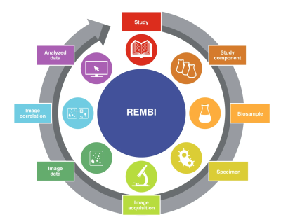

This viewer provides an interactive interface for exploring the LiMi-Model — the Light Microscopy Model developed and maintained by QUAREP-LiMi to standardize microscopy metadata specifications.
To navigate: click the center of any node to expand or collapse its sub-elements and attributes. Click the "i" icon on any node to view a detailed description of that element.
Nodes displayed in lighter colors represent attributes, which capture the specific characteristics of each element.

The LiMi-Model is based on the OME Data Model. Specifically, the LiMi-Model incorporates a targeted revision of select native OME Data Model elements, together with the introduction of new elements necessitated by recent technological advances. At the same time, the LiMi-Model extends the REMBI (Recommended Metadata for Biological Images) guidelines.
To highlight this double nature of the LiMi-Model, all elements that have been modified with respect to the OME Data Model are presented using the color palette introduced in Figure 2 of the original REMBI publication (Sarkans et al., 2021. DOI:
10.1038/s41592-021-01166-8).
On the other hand, all native OME Data Model elements and their children are represented using a light blue color compatible with the OME palette.
Designed for broad applicability across the light- and electron-microscopy communities, REMBI defines eight metadata categories required to ensure that microscopy experiments can be reproduced and their data shared and reused.
While the LiMi-Model primarily focuses on REMBI's Image acquisition category, it also incorporates select attributes from four additional categories: Study component, Biosample, Specimen, and Image data. To make these distinctions clear, the viewer uses a gradient of colors:
These color cues help users quickly recognise which part of the metadata each element represents, supporting better documentation, reproducibility, and reuse of microscopy data.
The LiMi-Model Viewer was produced for QUAREP-LiMi by Anthony Asmar with input from Caterina Strambio-De-Castillia, Judith Lacoste and Roland Nitschke, and is released under CC-BY-SA.